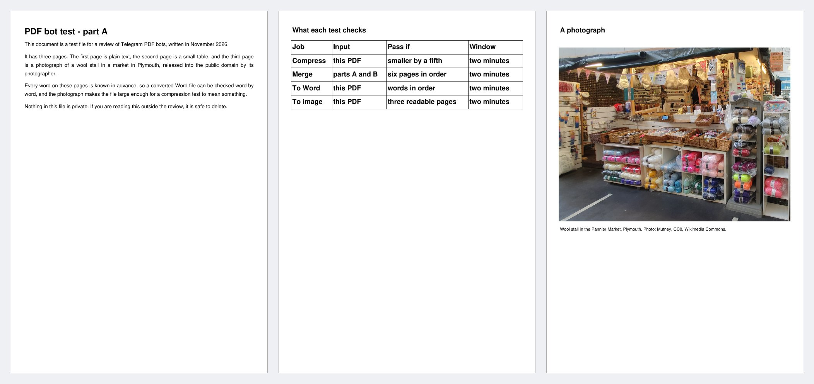
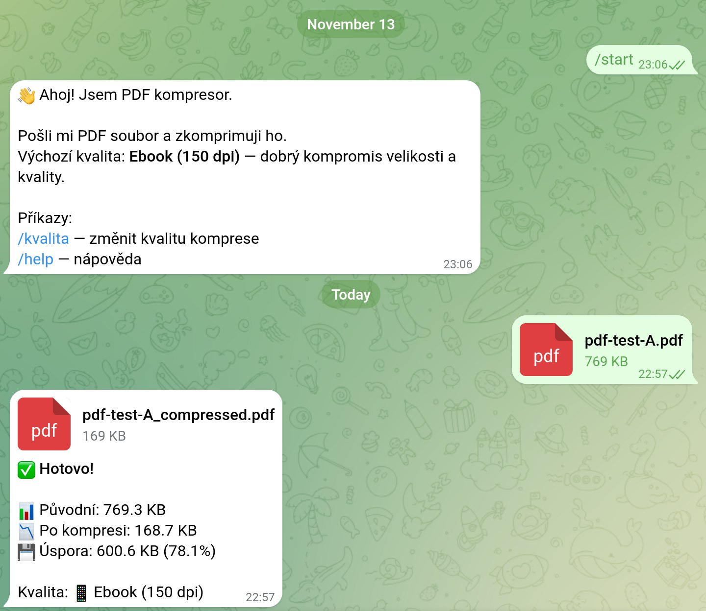

Telegram PDF Bots: 75 Tested, 16 Did the Job
Search Telegram for "pdf bot" and you get dozens of bots that promise to compress, merge, convert or translate your PDF for free, in seconds. In November 2026 I found 83 of them, set aside eight that I couldn't or wouldn't test, and sent the other 75 the same test file: a three-page PDF I wrote myself, so I knew exactly what a correct result looked like.
40 never answered the file. 16 did the job. Image-to-PDF was the easy one; compression was not: of 19 compressors, exactly one made my file smaller, and the file it sent back says it was made by Ghostscript, a free tool you can run yourself. One more "compressed" it into a bigger file and celebrated with an emoji. Here's what each bot did, and the ones I'd actually use.
How I tested
- Corpus. Thirteen searches in Telegram's own search box, the way a new user would look: ten in English (
pdf bot,compress pdf,merge pdf,pdf to word,image to pdfand five more like them) and three in Russian and Ukrainian. 83 different bots came back. - Out before the test. Eight, by their own name and description: four that do some other job (a desktop-app advert, a bank-receipt checker, a trading tool, a sewing-pattern converter), an "urgent notice, follow the link" lure, two that advertise modded apps or book downloads, and one that only turns Word files into PDFs.
- The test. Each bot got one job, the one it offers first in its greeting (or its name, if it said nothing), then one file and two minutes to answer. I allowed one tap on the bot's first step before the file, and one after it, but only on a button naming the job. A script checked every returned file against an answer key, and I opened every one myself.
- Boundaries. No channel joined, no payments, no premium or ad buttons, no phone number. Limits are only what each bot says about itself. Over the next 24 hours I counted every unprompted message, then sent
/stop.
Seventeen of the 83 I had already messaged a month earlier for my converter bots review, including the biggest bot here, @ImageToPdfRobot (19,907 monthly users). They got the same file as everyone else and an asterisk in the tables.
The test file
I wrote the test PDF myself, so I knew the right answer before any bot saw it: three pages, 787,801 bytes. Page one is plain prose, page two a small table, page three a public-domain photo of a wool stall in Plymouth's Pannier Market (CC0, by Mutney on Wikimedia Commons). All 178 words are known in advance, so a Word conversion can be checked word by word, and the photo makes the file heavy enough for a compression test to mean something.


How each job was scored
I fixed these rules before the first file went out, and tested the scoring script on good and broken files of my own first.
- Compress: all three pages back, at most 80% of the original size, text still selectable. For scale, the free Ghostscript
/ebookpreset took my file to 21.9% with every word intact. - Merge: one PDF, six pages, part A before part B.
- PDF to Word: a .docx that opens, with at least 95% of my words in order.
- PDF to image: three images, page one at least 1,000 pixels on its long side.
- Image to PDF: the whole photo, nothing cropped.
What /start gets you
I sent /start to the other 60 on 13 November, one every 18 seconds, and checked the quiet chats again a quarter of an hour later.
- 31 said nothing, not even a quarter of an hour later. One of them, @yengilkubot, sent a language picker an hour and a half after that.
- 9 answered with a wall: "subscribe to our channel first". Five of them, plus two from my converter review, link to the same private invite, so that's one operator wearing seven names.
- 20 gave a real reply: a language picker, a menu of jobs, or a plain "send me a PDF". One says the project is "on hold due to a lack of funding".
Silence at /start proves nothing for a bot whose whole input is a file, so the silent ones and the walls got the test file too.
Sending the files
On 14 November, between 22:53 and 23:28 Kyiv time, all 75 bots got their file: 22 image-to-PDF bots, 21 PDF-to-Word, 19 compressors, 9 merge bots, 3 PDF-to-image bots and one translator.
- 40 never replied to the file. That's 28 of the 29 that had ignored
/start, and 8 of the 17 bots from the converter review. - 17 sent a file back, and 16 of those did the job. The one that didn't is a compressor; more on it below.
- 11 wanted a step my rules didn't allow: a second button, a reply listing page numbers, a sub-menu, or a menu with every job except the advertised one.
- 3 put up a channel wall when the file arrived.
- 3 answered with a canned line that had nothing to do with the file, like "Use /off to pause your subscription".
- 1 said it wasn't working ("the bot is not working now, try later", in Arabic).
The walls turned out to be mostly bluff. Nine bots had told me at /start to subscribe to a channel first. When the file came, six of them did the job anyway, without me joining anything. Two asked again, and one stayed silent.
So 16 of 75 did what they promised, about one in five. In the tables, "Taps" counts every button I pressed, and "File back" is the bot's own time after my last action, the file or the tap.
Image to PDF: 10 of 22
The easiest job, and the one most bots managed. All ten kept the whole photo. Nobody cropped it, and nobody squashed it.
| Bot | File back | Taps | Result | Pass |
|---|---|---|---|---|
| @Word_Photo_PDF_Bot | under 2 s | 0 | whole photo, 1900×1425 | yes |
| @images_to_pdfbot* | under 2 s after the tap | 1 | whole photo, 620×465 on a white A4 page | yes |
| @Convert_images_to_pdf_bot* | under 2 s after the tap | 1 | whole photo, 620×465 on a white A4 page | yes |
| @ImageToPdfRobot* | 4 s after the tap | 1 | whole photo, 1900×1425 | yes |
| @PNG_PDF_ConverterBot* | 3 s after the tap | 2 | whole photo, 1900×1425 | yes |
| @PDF_Maker_bot | under 2 s after the tap | 1 | whole photo, 620×465 on a white A4 page | yes |
| @ImgetopdfBot | under 2 s after the tap | 1 | whole photo, 620×465 on a white A4 page | yes |
| @PDF_scannerbot | under 2 s after the tap | 1 | whole photo, 620×465 on a white A4 page | yes |
| @maker_pdf_bot | under 2 s after the tap | 1 | whole photo, 620×465 on a white A4 page | yes |
| @PhotoToPdfMakerBot | 29 s after the tap | 1 | whole photo, 1900×1425 | yes |
Six of the ten made the same file, with the photo shrunk to a third of its width. They place my 1900-pixel photo on a white A4 page at 620 pixels wide, and every one of the six files is exactly 122,725 bytes. My scoring script flagged them at first, because the white margins are baked into the picture and the shape no longer matched. I measured the photo inside the margins: the same 4:3 shape, nothing cut. So they pass, but if you want to print the photo or zoom in, use one of the other four, which kept all 1,900 pixels.
The quickest was @Word_Photo_PDF_Bot: a PDF back in under two seconds, no buttons, no questions. @ImageToPdfRobot, the biggest bot in this whole set with 19,907 monthly users, needs one tap on "Create PDF Now", because it waits for more photos first. That's a sensible design for a multi-page scan.
PDF to Word: 3 of 21
| Bot | File back | Taps | Result | Pass |
|---|---|---|---|---|
| @PdfUWordBot | under 2 s after the tap | 1 | .docx, 100% of my words in order | yes |
| @Hd4d_4bot | 4 s after the tap | 1 | .docx, 100% of my words in order | yes |
| @Pdf4_bot | 12 s after the tap | 1 | .docx, 100% of my words in order | yes |
Three .docx files out of 21 bots, and all three are good: every one of my 178 words in the right order, and the table on page two came back as a real Word table with five rows rather than a picture of one. All three needed one tap after the file (a "DOCX" or "Convert to Word" button).
They are also the same file. All three are exactly 6,244,688 bytes, all three say inside that they were "generated by python-docx", and in all three my 766 KB photo has become a 6.2 MB PNG. That's why a 769 KB PDF comes back as a 6.1 MB Word document, eight times bigger. Two of the three bots are part of the seven-name network from /start; the third, @PdfUWordBot, answers in Ukrainian and isn't on that invite link, but it builds its file with the same tool.
Compress: 1 of 19
| Bot | File back | Taps | Result | Pass |
|---|---|---|---|---|
| @muj_pdf_compressor_bot | 2 s | 0 | 169 KB, 22% of the original, 3 pages | yes |
| @PDFszhatie_bot | 2 s | 0 | 770 KB, 100% of the original, 3 pages | no |
This was the biggest surprise. Nineteen bots offer compression as their first job, and exactly one made my file smaller. Seventeen sent no file back, and thirteen of those never answered at all.

@muj_pdf_compressor_bot sent back 169 KB, 22% of the original, in about two seconds, with all three pages and every word still selectable. Its own greeting names its default setting, "Ebook (150 dpi)", and the file it returns says what made it: GPL Ghostscript 10.07.0. That's the free tool I used for my own baseline. Ghostscript's /ebook preset took my file to 172,430 bytes; the bot's file is 172,785. The bot runs a newer Ghostscript (10.07 against my 10.02), which likely explains the 355 bytes.
@PDFszhatie_bot's file names Ghostscript too, but the photo inside came back untouched, still 1900 × 1425. It replied "✅ Done! 769 KB → 770 KB 🎉" (in Ukrainian), and the file really was 272 bytes bigger than mine.
Two more might work with a second tap: @PDF_MASTER9999_BOT wants a compression level and then "Done", and the Uzbek @yengilkubot a mode after its menu. My rules allowed one tap, so neither got a verdict.
Merge: 1 of 9
| Bot | File back | Taps | Result | Pass |
|---|---|---|---|---|
| @TwoPdfBot | 12 s after the tap | 1 | 6 pages, A then B | yes |
@TwoPdfBot is the only merge bot that gave me a merged file. You send the PDFs one at a time and tap "Done", and twelve seconds later you get one PDF: six pages, part A first, then part B. Two other bots saw my file and offered every job except merging, one put up a channel wall, and five never answered.
PDF to image: 1 of 3
| Bot | File back | Taps | Result | Pass |
|---|---|---|---|---|
| @PDF_to_PNG_bot | under 2 s | 0 | 3 images, page 1 1810×2560 | yes |
@PDF_to_PNG_bot sent three page images in about a second, each 1810 × 2560 pixels and easy to read. Despite the name, they arrive as JPEGs. The other two: @PDFeditorBot asked whether I wanted all pages (one button more than my rules allow), and one never replied.
The one translator in the set, @Translate_pdf_bot, never answered.
One network, many names
Seven bots in my set send you to the same private invite link at /start. Here's what they did with the file: four made the 122,725-byte image PDFs, two made the 6.2 MB Word files, and one said it wasn't working. Two more English-language bots that aren't on the invite return the same 122,725-byte PDF. Count them together and eight of the 16 bots that worked look like one operator with one set of tools, wearing different names in English and Arabic. Searching under a different name doesn't get you a different bot.
Why a bot fails on a big PDF
Most Telegram bots run on Telegram's standard Bot API, and its own documentation says that "for the moment, bots can download files of up to 20MB in size". A 30 MB scan never reaches the bot's code, whatever the bot promises. In the other direction the limit is higher: bots "can currently send files of any type of up to 50 MB in size". Only bots that run their own Bot API server get past either number. If your PDF is over 20 MB, split it or shrink it on your computer first.
Did they message me afterwards?
Some bots treat any message as a subscription, so for 24 hours after the file I counted everything that arrived unasked, meaning anything sent more than five minutes after my last message or tap, then read every chat by hand.
One of the 75 wrote first: @yengilkubot, the next morning, with a broadcast in Uzbek and Russian about passing 200 active users. @Pdfbot1_bot, silent through the whole test, answered twelve hours late with "Open FileFlow from the menu and upload the file in the Mini App." That's a reply, not an ad. Compare 0 of 54 background remover bots, 2 of 49 file-to-link bots and 3 of 65 temp mail bots.
What the bots say about limits
Only what the bots say about themselves; I didn't test these.
- @PhotoToPdfMakerBot: "up to 30 pages, in the order you sent them".
- @PDF_MASTER9999_BOT: "Telegram limit: files up to 20 MB" (in Russian), the Bot API limit above.
- @TwoPdfBot: "100% Free To Use". @Word_Photo_PDF_Bot: free, "without ads or watermarks" (in Russian).
- @PdfToWordConverterBot: an "Add Credit" button, so conversions are paid past some point.
Nothing I got back carried a watermark: no returned PDF or Word file had a single word that wasn't in my original, and the images had nothing added.
Which one to use
- Compress: @muj_pdf_compressor_bot, the only one that worked. It's in Czech, but all you do is send a PDF. To keep the file on your own computer, Ghostscript's
/ebookpreset gives the same result. - Merge: @TwoPdfBot. Send the files one at a time, in order, then tap "Done".
- PDF to Word: @PdfUWordBot. The text and the table come through intact, but expect a much bigger file if your PDF has photos in it.
- PDF to image: @PDF_to_PNG_bot. Every page as a sharp JPEG, in about a second, with no buttons to press.
- Image to PDF: @Word_Photo_PDF_Bot for one photo, full size in under two seconds. For a multi-page scan, @ImageToPdfRobot or @PhotoToPdfMakerBot, which wait for more pages until you tap. Skip the six that shrink your photo to a third.
The lesson from 75 files is the one my background remover test taught me: send a file you don't care about first. More than half of these bots never answered, including @ilovepdfs_bot with 1,577 monthly users, and a "subscribe first" wall tells you nothing either way.
Questions
Is there a free PDF bot on Telegram that works?
Yes. In my November 2026 test, @muj_pdf_compressor_bot compressed, @TwoPdfBot merged, @PdfUWordBot converted to Word, @PDF_to_PNG_bot made page images and @Word_Photo_PDF_Bot turned a photo into a PDF, all without payment or a channel subscription.
Why is my PDF bot not responding?
Most likely nothing is running behind it. 40 of the 75 PDF bots I sent a file to in November 2026 never replied, including one showing 1,577 monthly users. Send a test file before the real one.
Which Telegram bot can compress a PDF?
Of 19 compressor bots I tested, only @muj_pdf_compressor_bot made my file smaller: 769 KB down to 169 KB with all text intact. Its result matches the free Ghostscript /ebook preset almost to the byte.
Is it safe to send a PDF to a Telegram bot?
You are handing the file to whoever runs the bot, and you can't check what they keep. Eight bots in my test promise, in their own description or first message, that files are deleted after processing; none of that can be verified from outside. Nothing with an ID number, a signature or a bank statement should go to a bot.
A Telegram bot that asks for nothing
The free Party Game runs Truth or Dare, Never Have I Ever and Would You Rather as a Mini App inside Telegram, in English or Ukrainian. No channel to join, no credits to buy, no file to upload.
Open the Party Game Converting other files? See the converter bots I tested.